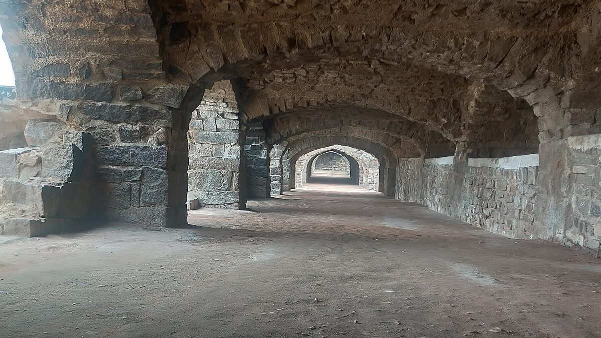

CU Denver recibe el visto bueno para un campus en Hyderabad, primera clase en agosto de 2027
La carta de intención de la UGC para CU Denver, anunciada el 6 de octubre, prepara el primer campus universitario extranjero en Telangana, con negocios, informática, ingeniería y análisis previstos desde agosto de 2027 si llegan las aprobaciones finales.

Puntos clave
- HYDERABAD: La Universidad de Colorado Denver ha recibido una carta de intención de la Comisión de Becas Universitarias de India para abrir un campus con títulos en Hyderabad, con los primeros…
- El anuncio llegó el 6 de octubre.
- El rector Kenneth T.
HYDERABAD: La Universidad de Colorado Denver ha recibido una carta de intención de la Comisión de Becas Universitarias de India para abrir un campus con títulos en Hyderabad, con los primeros estudiantes previstos en agosto de 2027. La universidad dice que sería el primer campus universitario público estadounidense en India, y el primer campus universitario extranjero de cualquier tipo en Telangana.
El anuncio llegó el 6 de octubre. Los primeros programas ofrecidos serían en negocios, informática, ingeniería y análisis, materias elegidas para estar cerca de las industrias que ya llenan las torres de oficinas de Hyderabad. Se propondrían más programas a la UGC a partir del segundo año. El campus funcionaría con Emeritus, una empresa global de educación, como socio estratégico de empresa conjunta de CU Denver para funciones no académicas. La aprobación final de la UGC aún está por llegar, y la universidad no ha anunciado lugar, cuotas ni tamaños de cohortes.
El rector Kenneth T. Christensen dijo a The PIE News que la universidad busca un lugar accesible cerca de la base industrial de Hyderabad, para que los estudiantes puedan llegar a los empleadores para alianzas y colocaciones. Al preguntarle si el campus formaría parte del desarrollo previsto de Future City en Telangana, no llegó a confirmar ningún vínculo. Dijo que se espera que las admisiones abran una vez que lleguen las aprobaciones finales en los próximos meses, con la enseñanza aún prevista para empezar en agosto de 2027.
Por qué importa
Para los estudiantes indios, un campus como este cambia la aritmética de un título extranjero. El título viene de la universidad estadounidense, pero el estudiante se queda en India, sin costos de vivienda en Estados Unidos, sin colas de visados ni el riesgo de que un cambio de política en Washington deje varada una educación a medio terminar. Para las familias en Telangana, sería la primera opción de su tipo en casa. Para CU Denver, la apuesta también está clara. Los estudiantes indios han formado parte de su campus de Denver durante décadas, y esto lleva la universidad a donde están los estudiantes.
El marco detrás es la Política Nacional de Educación de India de 2020, que impulsó la internacionalización, y la normativa de la UGC de 2023 para campus de instituciones extranjeras de educación superior. Una carta de intención bajo esas normas es un visto bueno para construir, no la licencia final para admitir estudiantes. Esa distinción importa para cualquier familia que ahora lee titulares. Todavía no hay formulario de solicitud, cuota ni examen de ingreso, y solo se pueden ofrecer los programas que obtengan la aprobación final.
El contexto
CU Denver no es el primer nombre estadounidense en llegar, pero es el primer público. El privado Illinois Institute of Technology recibió su primera cohorte este año en su campus de Vikhroli, Mumbai. Las universidades públicas tienen un peso distinto en India, donde las instituciones gubernamentales marcan el tono en cuotas y acceso, y donde que una universidad pública estadounidense llegue primero a un estado es un titular que el gobierno estatal usará.
Hyderabad compitió por esto con la fuerza de su fuerza laboral. Los empleadores de tecnología y análisis de la ciudad contratan en los mismos campos que el campus planea enseñar primero. Christensen dijo que el modelo de Hyderabad se apoyaría en el aprendizaje aplicado, el trabajo interdisciplinario y la preparación profesional, el mismo discurso que CU Denver hace como universidad pública urbana de investigación en Colorado. El cofundador y director ejecutivo de Emeritus, Ashwin Damera, dijo que el campus acercaría la educación global a los estudiantes indios, con énfasis en las habilidades para una fuerza laboral cambiante.
Inside Higher Ed señaló una puerta más por delante. Si el acuerdo también necesita la aprobación del acreditador de CU Denver, la Higher Learning Commission, ese proceso corre con su propio reloj junto al de la UGC.
Qué sigue
Tres cosas deciden si agosto de 2027 se mantiene. Primero, la aprobación final de la UGC, y la lista exacta de programas que cubre. Segundo, el lugar. Un campus cerca de la base industrial es el objetivo declarado, pero no se ha cerrado ningún lugar en público. Tercero, las preguntas de dinero que la universidad aún no ha respondido: matrícula, becas y cómo se compararán las cuotas en Hyderabad con Denver. Los estudiantes y padres deben esperar esas respuestas por escrito antes de tratar como real el discurso de cualquier agente. Los títulos de campus extranjeros aprobados bajo el marco de la UGC deben estar a la par con el título del campus de origen, pero cada familia debe comprobar que su programa elegido está en la lista final aprobada.
Si las aprobaciones llegan a tiempo, Hyderabad tendrá su primer campus universitario extranjero en menos de un año, y la competencia entre estados indios por el siguiente se hará más intensa.
Cifras clave
Fecha de anuncio: 6 de octubre de 2026. Primera cohorte: agosto de 2027, sujeta a aprobaciones finales. Primeros campos: negocios, informática, ingeniería y análisis. Estado: carta de intención de la UGC emitida, aprobación final pendiente. Primeros lugares reclamados: primer campus universitario público estadounidense en India, primer campus universitario extranjero en Telangana. Cuotas y tamaño de cohorte: aún no anunciados.
Fuentes
Inside Higher Ed: University of Colorado Denver to open branch campus in India (https://www.insidehighered.com/news/global/us-colleges-world/2026/10/09/university-colorado-denver-open-branch-campus-india) The PIE News: CU Denver takes step towards India campus in Hyderabad (https://thepienews.com/cu-denver-takes-step-towards-india-campus-in-hyderabad/) Education Post: CU Denver receives UGC letter of intent for Hyderabad campus, first cohort to start in 2027 (https://educationpost.in/news/education/cu-denver-receives-ugc-letter-of-intent-for-hyderabad-campus-first-cohort-to-start-in-2027)
Cronología
- Oct 6, 2026CU Denver anuncia que ha recibido una carta de intención de la UGC para un campus con títulos en Hyderabad.
- Aug 2027Se espera que la primera cohorte empiece, sujeta a las aprobaciones regulatorias finales.